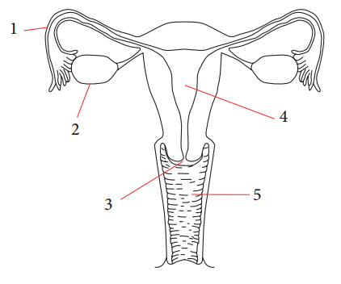
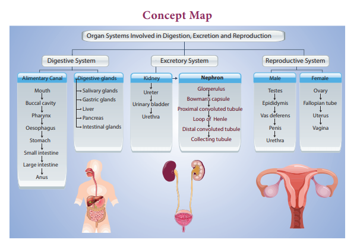
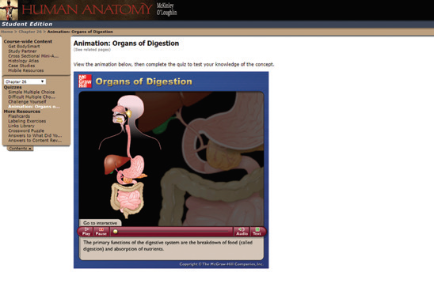

1. Which of the following is not a salivary gland question mark
a. Sublingual b. Lachrymal c. Submaxillary d. Parotid
2. Stomach of human beings mainly digests dash
a. carbohydrates b. proteins c. fat d. sucrose
3. To prevent the entry of food into the trachea, the opening is guarded by dash
a. epiglottis b. glottis c. hard palate d. soft palate
4. Bile helps in the digestion of dash
a. proteins b. sugar c. fats d. carbohydrates
5. The structural and functional unit of the kidney is dash
a. villi b. liver c. nephron d. ureter
6. Which one of the following substance is not a constituent of sweat question mark
a. Urea b. Protein c. Water d. Salt
7. The common passage meant for transporting urine and sperms in male is dash
a. ureter b. urethra c. vas deferens d. scrotum
8. Which of the following is not a part of female reproductive system question mark
a. Ovary b. Uterus c. Testes d. Fallopian tube
1. The opening of the stomach into the intestine is called dash
2. The muscular and sensory organ which helps in mixing the food with saliva is dash
3. Bile, secreted by liver is stored temporarily in dash
4.The longest part of alimentary canal is dash
5. The human body functions normally at a temperature of about dash
6. The largest cell in the human body of a female is dash
1. Nitric acid in the stomach kills microorganisms in the food.
2. During digestion, proteins are broken down into amino acids.
3. Glomerular filtrate consists of many substances like amino acids, vitamins, hormones, salts, glucose and other essential substances.
4. Match the following
Organ |
Elimination |
Skin |
a.Urine |
Lungs |
b. Sweat |
Intestine |
c. Carbon dioxide |
Kidneys |
d. Undigested food |
a. Excretion and Secretion
b. Absorption and Assimilation
c. Ingestion and Egestion
d. Diphyodont and Heterodont
e. Incisors and Canines
1. How is the small intestine designed to absorb digested food question mark
2. Why do we sweat question mark
3. Mention any two vital functions of human kidney.
4. What is micturition question mark
5. Name the types of teeth present in an adult human being. Mention the functions of
each.
6. Explain the structure of nephron.
1. Describe the alimentary canal of man
2. Explain the structure of kidney and the steps involved in the formation of urine
Mark the correct answer as:
a. If both Assertion and Reason are true and Reason is the correct explanation of Assertion.
b. If both Assertion and Reason are true but Reason is not the correct explanation of Assertion.
c. If Assertion is true but Reason is false.
d. If both Assertion and Reason are false.
1. Assertion: Urea is excreted out through the kidneys. Reason: Urea is a toxic substance.
2. Assertion: In both the sexes gonads perform dual function. Reason: Gonads are also called primary sex organs.
1. If pepsin is lacking in gastric juice, then which event in the stomach will be affected question mark
a. digestion of starch into sugars.
b. breaking of proteins into peptides.
c. digestion of nucleic acids.
d. breaking of fats into glycerol and fatty acids.
2. Name the blood vessel that Bracket OPEN a bracket closed enter malphigian capsule and Bracket OPEN b bracket closed leaves malphigian capsule.
3. Why do you think that urine analysis is an important part of medical diagnosis question mark
4. Why your doctor advises you to drink plenty of water question mark
5. Can you guess why there are sweat glands on the palm of our hands and the soles of our feet question mark

1 |
2 |
3 |
4 |
5 |
a. Fallopian tube |
Oviduct |
Uterus |
Cervix |
Vagina |
b. Oviduct |
Cervix |
Vagina |
Ovary |
Vas deferens |
c. Ovary |
Oviduct |
Uterus |
Vagina |
Cervix |
d. Fallopian tube |
Ovary |
Cervix |
Uterus |
Vagina |
Verma P.S and Agarwal, V.K. Animal Physiology, S. Chand and Company, New Delhi
https://www.britannica.com/science/humandigestive-system
https://biologydictionary.net/excretory-system/
https://www.britannica.com/science/humanreproductive-system

ICT CORNER Human digestive system
This activity enables to explore the functions of every part in the digestive system
Image was given below

Steps
Type the URL link given below in the browser or scan the QR code. You can view “the digestive system”.
Click the go to interactive mode to explore the functions of each part you want to learn.
Every part and its function can be learnt by clicking that particular part that we want to learn.
Also you can see the process of digestion by clicking go to animation mode.
Browse in the link:
URL: http://highered.mheducation.com/sites/0072495855/student_view0/chapter26/animation__organs_of_digestion.html